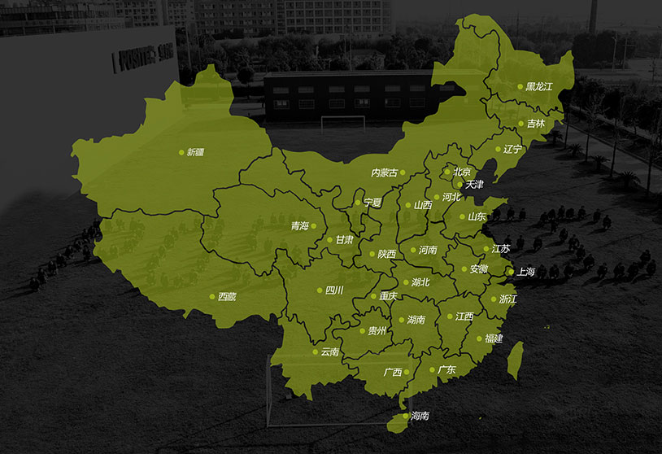

关于我们
顺利通过了ISO9001质量体系认证。完善服务体系，为您提供一站式服务，省时省力更省心。


空气悬浮鼓风机
天津市天鼓机械制造有限公司，始于1993年，由天津市生产合作联社成立的华北流体机械成套公司，于2002年与原天津市鼓风机总厂相关企业合资成立天津市天鼓机械制造有限公司（混合所有制），开始生产罗茨鼓风机系列产品，于2016年收购原天津市通风机厂相关企业，扩大生产规模，开始生产各类通风机类产品。
多年来，公司始终坚持科技进步，与西安交通大学、天津大学、中国科学院、北京航空航天大学有多方面、多领域的合作，在流体机械高性能产品方面取得了卓有成效的成绩，先后荣获多项科技成果及发明、实用新型专利及著作权数十件，是国家级高新技术企业，是天津市首批科技小巨人企业
公司坚持以人为本精神、服务意识，把自己与整个社会的进步结合起来，服务于全球建材、钢铁、化工、环保等领域，目前拥有数千家忠实的用户和服务领域，源源不断的为社会乃至人类贡献着自己的力量。